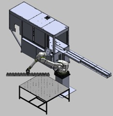

Automated Solar Busbar Assembly Line
Aptera Motors · Industry
Early solar panel prototypes required days to assemble using soft tooling. I designed and deployed a robotic pick-and-place system using a Fanuc robot arm, integrated with a high-efficiency stringer to automate solar string production. MATLAB modeling was used to optimize robotic movement and sequencing. The result: production time dropped from days to under 10 minutes per panel — roughly a 100× cycle time reduction — with consistent, validated cell placement throughout.